Chapter 7 Time series regression models
library(tsibble)
library(tsibbledata)
library(fable)
library(feasts)
library(lubridate)
library(patchwork)In this chapter we discuss regression models. The basic concept is that we forecast the time series of interest y assuming that it has a linear relationship with other time series \(x\).
For example, we might wish to forecast monthly sales \(y\) using total advertising spend \(x\) as a predictor. Or we might forecast daily electricity demand \(y\) using temperature \(x_1\) and the day of week \(x_2\) as predictors.
7.1 The linear model
7.1.1 Simple linear regression
In the simplest case, the regression model allows for a linear relationship between the forecast variable \(y\) and a single predictor variable \(x\):
\[ y_t = \beta_0 + \beta_1x_t + \varepsilon_t \]
Use the US consumption data, us_change, to fit a simple linear model where Consumption is predicted against Income. First, plot these two time series
us_change <- fpp3::us_change
us_change %>%
pivot_longer(c(Consumption, Income)) %>%
ggplot() +
geom_line(aes(Quarter, value, color = name)) +
labs(y = "% change",
color = "Series")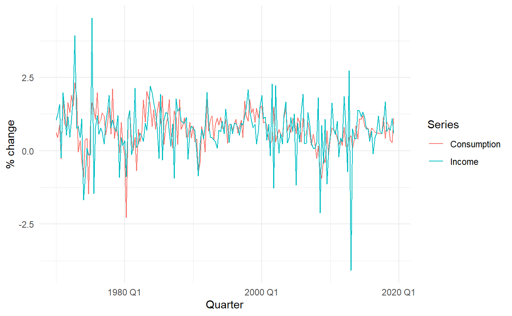
And then make a scatter plot:
us_change %>%
ggplot(aes(Income, Consumption)) +
ylab("Consumption (quarterly % change)") +
xlab("Income (quarterly % change)") +
geom_point() +
geom_smooth(method="lm", se=FALSE)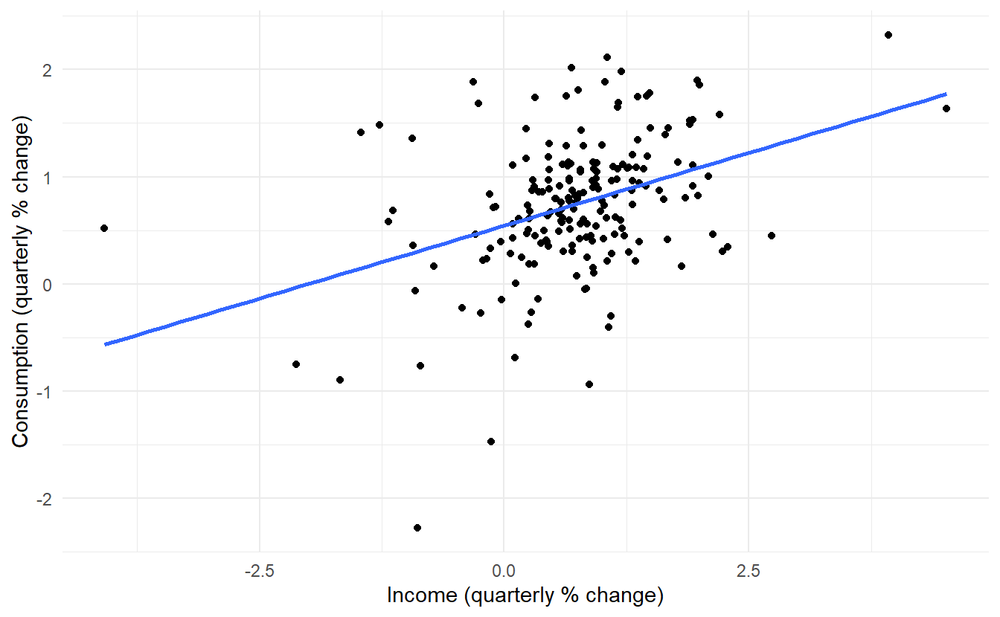
Fit a formal model:
us_change_fit <- lm(Consumption ~ Income, data = us_change)
us_change_fit %>% glance()
#> # A tibble: 1 x 12
#> r.squared adj.r.squared sigma statistic p.value df logLik AIC BIC
#> <dbl> <dbl> <dbl> <dbl> <dbl> <dbl> <dbl> <dbl> <dbl>
#> 1 0.147 0.143 0.591 33.8 2.40e-8 1 -176. 357. 367.
#> # ... with 3 more variables: deviance <dbl>, df.residual <int>, nobs <int>The simple linear model can be written as
\[ \operatorname{Consumption} = 0.54 + 0.27(\operatorname{Income}) + \epsilon \]
TSLM() (time series regression model) is more compatible with the modelling workflow in fable, compared to the general method lm()
us_change %>%
model(TSLM(Consumption ~ Income)) %>%
report()
#> Series: Consumption
#> Model: TSLM
#>
#> Residuals:
#> Min 1Q Median 3Q Max
#> -2.58236 -0.27777 0.01862 0.32330 1.42229
#>
#> Coefficients:
#> Estimate Std. Error t value Pr(>|t|)
#> (Intercept) 0.54454 0.05403 10.079 < 2e-16 ***
#> Income 0.27183 0.04673 5.817 2.4e-08 ***
#> ---
#> Signif. codes: 0 '***' 0.001 '**' 0.01 '*' 0.05 '.' 0.1 ' ' 1
#>
#> Residual standard error: 0.5905 on 196 degrees of freedom
#> Multiple R-squared: 0.1472, Adjusted R-squared: 0.1429
#> F-statistic: 33.84 on 1 and 196 DF, p-value: 2.4022e-08report() displays a object in a suitable format for reporting, here its result is identical to summary.lm(). TSLM()
7.1.2 Multiple linear regression
\[\begin{equation} \tag{7.1} y_t = \beta_0 + \beta_1x_{1t} + \beta_2x_{2t} + \dots + \beta_kx_{kt} + \varepsilon_t \end{equation}\]
We could simply use more predictors in us_change to create a multiple linear regression model. This time, the last 4 columns are included in the model. Take a look at the rest 3 time series determined by Production, Savings and Unemployment
us_change %>%
pivot_longer(4:6) %>%
ggplot() +
geom_line(aes(Quarter, value, color = name)) +
facet_wrap(vars(name), nrow = 3, scales = "free_y") +
scale_color_discrete(guide = FALSE)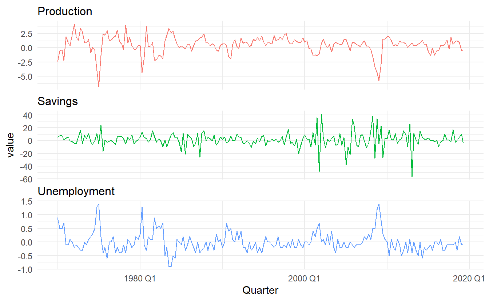
Below is a scatterplot matrix of five variables. The first column shows the relationships between the forecast variable (consumption) and each of the predictors. The scatterplots show positive relationships with income and industrial production, and negative relationships with savings and unemployment.
Figure 7.1: A scatterplot matrix of all 5 variables
There may some concerns about multicolinearity, but VIF (Variance Inflation Factor) shows there is nothing to worry about:
lm(Consumption ~ Income + Production + Savings + Unemployment,
data = us_change) %>%
car::vif()
#> Income Production Savings Unemployment
#> 2.670685 2.537494 2.506434 2.519616Fit a multiple linear model:
us_change_mfit <- us_change %>%
model(TSLM(Consumption ~ Income + Production + Savings + Unemployment))
us_change_mfit %>% report()
#> Series: Consumption
#> Model: TSLM
#>
#> Residuals:
#> Min 1Q Median 3Q Max
#> -0.90555 -0.15821 -0.03608 0.13618 1.15471
#>
#> Coefficients:
#> Estimate Std. Error t value Pr(>|t|)
#> (Intercept) 0.253105 0.034470 7.343 5.71e-12 ***
#> Income 0.740583 0.040115 18.461 < 2e-16 ***
#> Production 0.047173 0.023142 2.038 0.0429 *
#> Savings -0.052890 0.002924 -18.088 < 2e-16 ***
#> Unemployment -0.174685 0.095511 -1.829 0.0689 .
#> ---
#> Signif. codes: 0 '***' 0.001 '**' 0.01 '*' 0.05 '.' 0.1 ' ' 1
#>
#> Residual standard error: 0.3102 on 193 degrees of freedom
#> Multiple R-squared: 0.7683, Adjusted R-squared: 0.7635
#> F-statistic: 160 on 4 and 193 DF, p-value: < 2.22e-16\[ \operatorname{Consumption} = 0.25 + 0.74(\operatorname{Income}) + 0.05(\operatorname{Production}) - 0.05(\operatorname{Savings}) - 0.17(\operatorname{Unemployment}) + \epsilon \]
7.1.3 Assumptions
When we use a linear regression model, we are implicitly making some assumptions about the variables in Equation (7.1):
The forecast variable \(y_t\) and predictors \({x_1, \dots, x_k}\) have a (approximate) linear relationship in reality
Residuals \(\varepsilon_t\) are independent (not autocorrelated in a time series linear model specifically) and have constant variance \(\sigma^2\) and mean \(0\) . Otherwise the forecasts will be inefficient, as there is more information in the data that can be exploited. This can be expressed as
\[\begin{equation} \tag{7.2} \begin{aligned} \text{Cov}(\varepsilon_i, \varepsilon_j) &= \begin{cases} 0 & i \not=j \\ \sigma^2 & i = j \end{cases} \;\;\;i,j = 1, 2,\dots,T \\ E(\varepsilon_t) &= 0 \;\;\;t = 1,2,\dots,T \end{aligned} \end{equation}\]
Equation (7.2) is also called a G-M (Gauss-Markov) condition.
- Residuals follow a approximate normal distribution, meaning:
\[ \varepsilon_t \sim N(0, \sigma^2) \;\;\; t = 1,2, \dots,T \]
Another important assumption in the linear regression model is that each predictor \(x\) is not a random variable. If we were performing a controlled experiment in a laboratory, we could control the values of each \(x\) (so they would not be random) and observe the resulting values of \(y\). With observational data (including most data in business and economics), it is not possible to control the value of x, we simply observe it. Hence we make this an assumption.
7.2 Least squares estimation
The least squares principle provides a way of choosing the coefficients effectively by minimising the sum of the squared errors. That is, we choose the values of \(\beta_0\),\(\beta_1\),…,\(\beta_k\) that minimise :
\[ \sum_{t=1}^{T}{\varepsilon_t^2} = \sum_{t=1}^{T}{(y_t -\beta_0 - \beta_1x_{t1} + \beta_2x_{t2} - \cdots- \beta_kx_{tk})^2} \]
7.2.1 Fitted values
To get fitted values, use broom::augment():
us_change_mfit %>%
augment() %>%
pivot_longer(c(Consumption, .fitted)) %>%
ggplot() +
geom_line(aes(Quarter, value, color = name)) +
labs(color = "",
title = "Percent change in US consumption expenditure")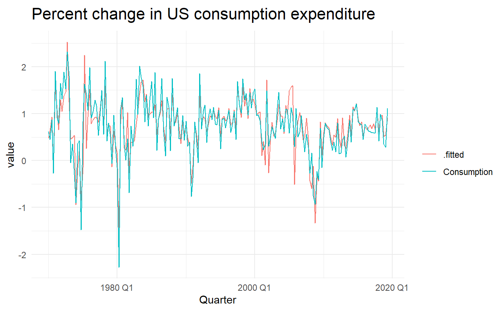
us_change_mfit %>%
augment() %>%
ggplot() +
geom_point(aes(Consumption, .fitted)) +
geom_abline(intercept = 0, slope = 1) +
labs(title = "Percent change in US consumption expenditure",
y = "Fitted (predicted values)",
x = "Data (actual values)")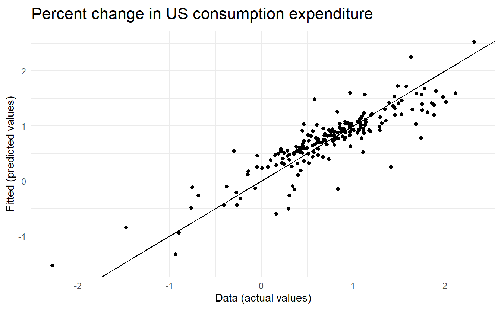
7.2.2 Goodness of fit
\[ R^2 = \frac{\sum{(\hat{y}_t - \bar{y})^2}}{\sum{(y_t - \bar{y})^2}} \]
7.2.3 Standard error of the regression
Estimate residual standard deviation \(\hat{\sigma}\), which is often known as the “residual standard error”:
\[\begin{equation} \tag{7.3} \hat{\sigma} = \sqrt{\frac{1}{T-K-1} \sum_{t=1}^T{e_t^2}} \end{equation}\]
where \(k\) is the number of predictors in the model. Notice that we divide by \(T− k − 1\) because we have estimated \(k + 1\) parameters (the intercept and a coefficient for each predictor variable) in computing the residuals.
The standard error is related to the size of the average error that the model produces. We can compare this error to the sample mean of \(y\) or with the standard deviation of \(y\) to gain some perspective on the accuracy of the model.
7.3 Evaluating a regression model
gg_tsresiduals() and Ljung-Box test(\(H_0\) being the residuals are from a white noise series) introduced in Section 5.4
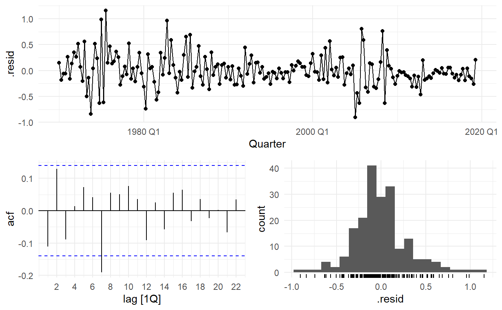
us_change_mfit %>%
augment() %>%
features(.resid, ljung_box, lag = 10, dof = 5)
#> # A tibble: 1 x 3
#> .model lb_stat lb_pvalue
#> <chr> <dbl> <dbl>
#> 1 TSLM(Consumption ~ Income + Production + Savings + Unemploy~ 18.9 0.00204The time plot shows some changing variation over time, but is otherwise relatively unremarkable. This heteroscedasticity will potentially make the prediction interval coverage inaccurate.
The histogram shows that the residuals seem to be slightly skewed, which may also affect the coverage probability of the prediction intervals.
The autocorrelation plot shows a significant spike at lag \(7\), and a significant Ljung-Box test at the \(5\%\) level. However, the autocorrelation is not particularly large, and at lag 7 it is unlikely to have any noticeable impact on the forecasts or the prediction intervals. In Chapter 11 we discuss dynamic regression models used for better capturing information left in the residuals.
7.3.1 Residual plots against predictors
We would expect the residuals to be randomly scattered without showing any systematic patterns. A simple and quick way to check this is to examine scatterplots of the residuals against each of the predictor variables. If these scatterplots show a pattern, then the relationship may be nonlinear and the model will need to be modified accordingly. See Section 7.8 for a discussion of nonlinear regression.
It is also necessary to plot the residuals against any predictors that are not in the model. If any of these show a pattern, then the corresponding predictor may need to be added to the model (possibly in a nonlinear form).
7.3.1.1 Example
residuals()allow us to extract residuals from a fable object, without calling augment().
The residuals from the multiple regression model for forecasting US consumption plotted against each predictor seem to be randomly scattered. Therefore we are satisfied with these in this case.
df <- us_change %>%
left_join(us_change_mfit %>% residuals(), by = "Quarter")
library(patchwork)
p1 <- ggplot(df, aes(Income, .resid)) +
geom_point() + ylab("Residuals")
p2 <- ggplot(df, aes(Production, .resid)) +
geom_point() + ylab("Residuals")
p3 <- ggplot(df, aes(Savings, .resid)) +
geom_point() + ylab("Residuals")
p4 <- ggplot(df, aes(Unemployment, .resid)) +
geom_point() + ylab("Residuals")
p1 + p2 + p3 + p4 + plot_layout(nrow = 2)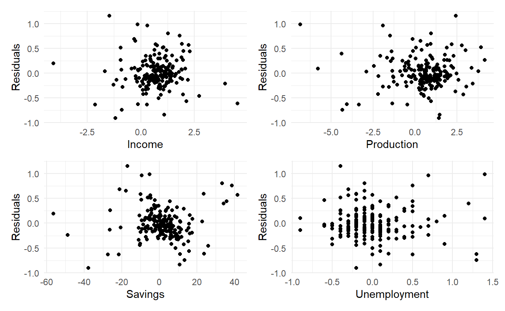
7.3.2 Residual plots against fitted values
A plot of the residuals against the fitted values should also show no pattern. If a pattern is observed, there may be “heteroscedasticity”, or non-constant variance. If this problem occurs, a transformation of the forecast variable such as a logarithm or square root may be required (see Section 3.1.)

7.3.3 Outliers and influential observations
Observations that take extreme values compared to the majority of the data are called outliers. Observations that have a large influence on the estimated coefficients of a regression model are called influential observations. Usually, influential observations are also outliers that are extreme in the \(x\) direction.
It is useful to distinguish outliers from anomalies. An outlier is mathematically stated as any observation point in given data-set that is more than 1.5 interquartile ranges (IQRs) below the first quartile or above the third quartile. Anomaly is items, events or observations which do not conform to an expected pattern (staistical distributions), simply anything “outside normal”. It can be noise, deviations and exceptions defined in application of particular system. The anomalize package provides tools in anomaly detection and visualization.
For a formal detection of observation influence, the leverage of the t-th observation \({x_{1t}, x_{2t}, \dots, {x_{kt}}\) is defined as the t-th diagonal element of the hat matrix \(H = X(X^TX)^{-1}X^T\), i.e. \(h_{tt}\).
And the Cook distance of the i-th observation is defined as :
\[ C_t = \frac{r_t^2}{k + 2} \times \frac{h_{tt}}{1 - h_{tt}} \]
where \(k\) is the number of predictors and \(r_t\) the i-th internally studentized residuals \(r_t = \frac{e_t}{\hat{\sigma}\sqrt{1-h_{tt}}}\)
Finding influential observations in practice is not covered in the book. So I followed instructions from another book: An R Companion to Applied Regression, 3rd (Fox and Weisberg 2018).
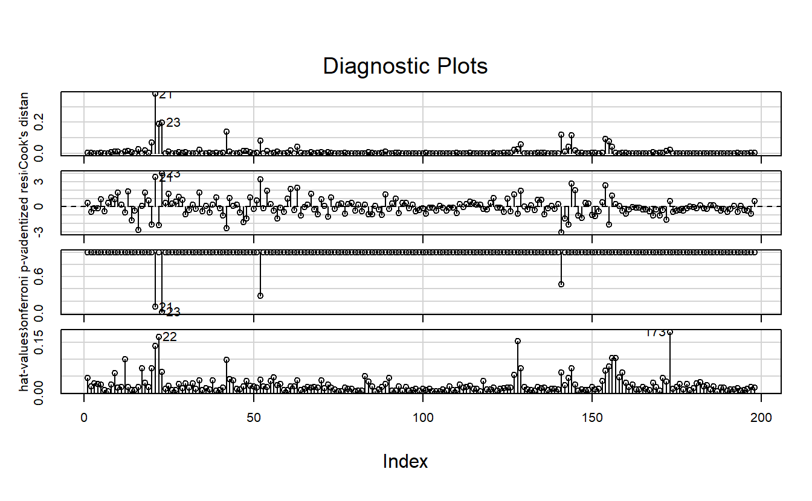
7.3.4 The performance package
The performance package is dedicated to providing utilities for computing indices of model quality and goodness of fit. In the case of regression, performance provides many functions to check model assumptions, like check_collinearity(), check_normality() or check_heteroscedasticity(). To get a comprehensive check, use check_model()
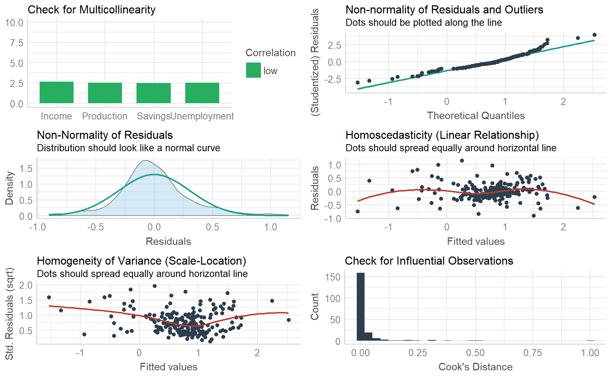
7.3.5 Spurious regression
Time series data are often “non-stationary”. That is, the values of the time series do not fluctuate around a constant mean or with a constant variance. We will come to the formal definition of stationarity in more detail in Section 9.1, but here we need to address the effect that non-stationary data can have on regression models.
For example, consider the two variables plotted in below. These appear to be related simply because they both trend upwards in the same manner. However, air passenger traffic in Australia has nothing to do with rice production in Guinea.
guinea_rice <- fpp3::guinea_rice
air_passengers <- fpp3::aus_airpassengers
p1 <- guinea_rice %>% autoplot() + ggtitle("Guinea rice production")
p2 <- air_passengers %>% autoplot() + ggtitle("Australia air passengers")
p3 <- guinea_rice %>%
left_join(air_passengers) %>%
ggplot(aes(Production, Passengers)) +
geom_point() +
geom_smooth(method = "lm", se = FALSE) +
ggtitle("A well-fitted regression line")
(p1 / p2) | p3 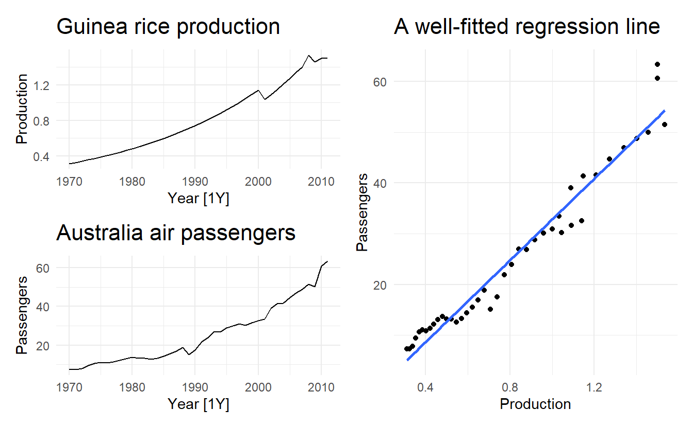
Regressing non-stationary time series can lead to spurious regressions. High \(R^2\) and high residual autocorrelation can be signs of spurious regression. Notice these features in the output below. We discuss the issues surrounding non-stationary data and spurious regressions in more details in Chapter 11.
Cases of spurious regression might appear to give reasonable short-term forecasts, but they will generally not continue to work into the future.
spurious_fit <- guinea_rice %>%
left_join(air_passengers) %>%
lm(Passengers ~ Production, data = .)
# high r^2 and sigma
glance(spurious_fit)
#> # A tibble: 1 x 12
#> r.squared adj.r.squared sigma statistic p.value df logLik AIC BIC
#> <dbl> <dbl> <dbl> <dbl> <dbl> <dbl> <dbl> <dbl> <dbl>
#> 1 0.958 0.957 3.24 908. 4.08e-29 1 -108. 222. 227.
#> # ... with 3 more variables: deviance <dbl>, df.residual <int>, nobs <int>Section 9.1.2 introduces the BG test, which is designed to detect autocorrelation among residuals of a regression model, small p-value suggests that residuals are highly correlated
7.4 Some useful predictors
There are several useful predictors that occur frequently when using regression for time series data.
7.4.1 Trend
It is common for time series data to be trending. A linear trend can be modelled by simply using \(x_{1t} = t\) as a predictor
\[ y_t = \beta_0 + \beta_1 t + \varepsilon \]
where \(t = 1, 2, \dots, T\)
A trend variable can be specified in the TSLM() function using the trend() special. In Section 7.8 we discuss how we can also model a nonlinear trends.
7.4.2 Seasonal dummy variables
If the time sereis data shows storng seasonality in some fashion, we tend to add seasonaly dummy variables to include this seasonality in our model.
The TSLM() function will automatically handle this situation if you specify the special season(). For example, if we are modelling daily data (\(period = 7\)), 6 dummy variables will be created.
7.4.3 Example: Australian quarterly beer production
Recall the Australian quarterly beer production data
recent_production <- aus_production %>%
filter(year(Quarter) >= 1992)
recent_production %>% gg_tsdisplay(Beer)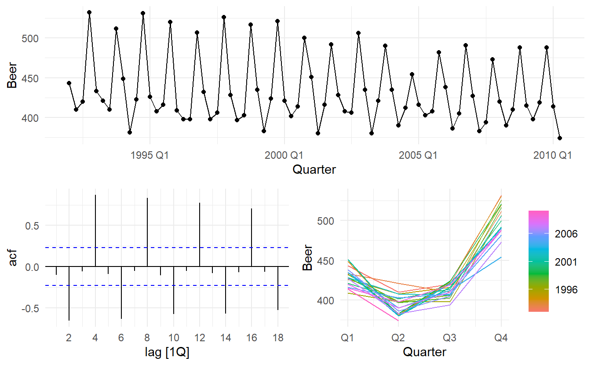
We want to forecast the value of future beer production. We can model this data using a regression model with a linear trend and quarterly dummy variables,
\[ y_t = \beta_0 + \beta_1 x_{1t} + \beta_2 d_{2t} + \beta_3 d_{3t}+ \beta_4 d_{4t} \] where \(d_{2t}\), \(d_{3t}\) and \(d_{4t}\) are dummy variables representing 3 of all 4 seasons except the first.
beer_fit <- recent_production %>%
model(TSLM(Beer ~ trend() + season()))
beer_fit %>% report()
#> Series: Beer
#> Model: TSLM
#>
#> Residuals:
#> Min 1Q Median 3Q Max
#> -42.9029 -7.5995 -0.4594 7.9908 21.7895
#>
#> Coefficients:
#> Estimate Std. Error t value Pr(>|t|)
#> (Intercept) 441.80044 3.73353 118.333 < 0.0000000000000002 ***
#> trend() -0.34027 0.06657 -5.111 0.00000272965382 ***
#> season()year2 -34.65973 3.96832 -8.734 0.00000000000091 ***
#> season()year3 -17.82164 4.02249 -4.430 0.00003449674545 ***
#> season()year4 72.79641 4.02305 18.095 < 0.0000000000000002 ***
#> ---
#> Signif. codes: 0 '***' 0.001 '**' 0.01 '*' 0.05 '.' 0.1 ' ' 1
#>
#> Residual standard error: 12.23 on 69 degrees of freedom
#> Multiple R-squared: 0.9243, Adjusted R-squared: 0.9199
#> F-statistic: 210.7 on 4 and 69 DF, p-value: < 0.000000000000000222Note that trend() and season() are not standard functions; they are “special” functions that work within the TSLM() model formulae.
There is an average downward trend of -0.34 megalitres per quarter. On average, the second quarter has production of 34.7 megalitres lower than the first quarter, the third quarter has production of 17.8 megalitres lower than the first quarter, and the fourth quarter has production of 72.8 megalitres higher than the first quarter.
augment(beer_fit) %>%
ggplot(aes(x = Quarter)) +
geom_line(aes(y = Beer, colour = "Data")) +
geom_line(aes(y = .fitted, colour = "Fitted")) +
labs(x = "Year", y = "Megalitres",
title = "Quarterly Beer Production")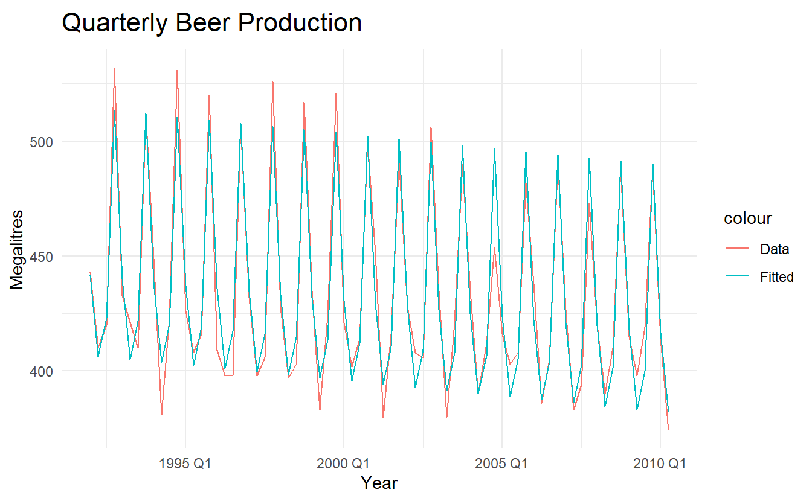
augment(beer_fit) %>%
ggplot(aes(x = Beer, y = .fitted,
colour = factor(quarter(Quarter)))) +
geom_point() +
scale_colour_brewer(palette="Dark2", name="Quarter") +
geom_abline(intercept = 0, slope = 1) +
labs(y = "Fitted", x = "Actual values",
title = "Quarterly beer production")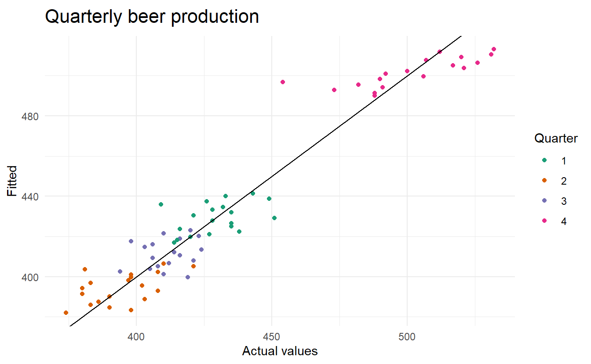
7.4.4 Intervention variables
It is often necessary to model interventions that may have affected the variable to be forecast. For example, competitor activity, advertising expenditure, industrial action, and so on, can all have an effect.
When the effect lasts only for one period, we use a spike variable. This is a dummy variable that takes value one in the period of the intervention and zero elsewhere. A spike variable is equivalent to a dummy variable for handling an outlier.
Other interventions have an immediate and permanent effect. If an intervention causes a level shift (i.e., the value of the series changes suddenly and permanently from the time of intervention), then we use a step variable. A step variable takes value zero before the intervention and one from the time of intervention onward.
Another form of permanent effect is a change of slope. Here the intervention is handled using a piecewise linear trend; a trend that bends at the time of intervention and hence is nonlinear. We will discuss this in Section 7.8.
7.4.5 Trading days
The number of trading days in a month can vary considerably and can have a substantial effect on sales data. To allow for this, the number of trading days in each month can be included as a predictor.
An alternative that allows for the effects of different days of the week has the following predictors:
\[ \begin{aligned} x_1 &= \text{number of Mondays in the month} \\ x_2 &= \text{number of Tuesdays in the month} \\ ... \\ x_7 &= \text{number of Sundays in the month} \\ \end{aligned} \]
7.4.6 Distributed lags
It is often useful to include advertising expenditure as a predictor. However, since the effect of advertising can last beyond the actual campaign, we need to include lagged values of advertising expenditure. Thus, the following predictors may be used.
\[ \begin{aligned} x_1 &= \text{expenditure in the last month} \\ x_2 &= \text{expenditure in the last 2 month} \\ ... \\ x_m &= \text{expenditure in the last m month} \\ \end{aligned} \] It is common to require the coefficients to decrease as the lag increases, although this is beyond the scope of the book.
7.4.7 Easter
Easter differs from most holidays because it is not held on the same date each year, and its effect can last for several days. In this case, a dummy variable can be used with value one where the holiday falls in the particular time period and zero otherwise.
With monthly data, if Easter falls in March then the dummy variable takes value 1 in March, and if it falls in April the dummy variable takes value 1 in April. When Easter starts in March and finishes in April, the dummy variable is split proportionally between months.
7.4.8 Fourier sereis
An alternative to using seasonal dummy variables, especially for long seasonal periods, is to use Fourier terms, which, proved by French mathematician Jean-Baptiste Fourier in the 1800s, can approximate any periodic function. We can use them for seasonal patterns.
If \(m\) is the seasonal period, then the first few Fourier terms (6 listed here) are given by:
\[
\begin{aligned}
x_{1t} &= \cos{\frac{2 \pi t}{m}} \\
x_{2t} &= \sin{\frac{2 \pi t}{m}} \\
x_{3t} &= \cos{\frac{4 \pi t}{m}} \\
x_{4t} &= \sin{\frac{4 \pi t}{m}} \\
x_{5t} &= \cos{\frac{6 \pi t}{m}} \\
x_{6t} &= \sin{\frac{6 \pi t}{m}} \\
\end{aligned}
\]
and so on. If we have monthly seasonality, and we use the first 11 of these predictor variables, then we will get exactly the same forecasts as using 11 dummy variables.
With Fourier terms, we often need fewer predictors than with dummy variables, especially when m is large. This makes them useful for weekly data, for example, where \(m \approx 52\). For short seasonal periods (e.g., quarterly data), there is little advantage in using Fourier terms over seasonal dummy variables.
These Fourier terms are produced using the fourier(K) function. The K argument specifies the maximum order of Fourier terms (i.e., how many pairs of \(\sin\) and \(\cos\) terms to include). For example, the Australian beer data (quarterly, should include 3 terms so K = 2) can be modelled like this.
fourier_beer <- recent_production %>%
model(TSLM(Beer ~ trend() + fourier(K = 2)))
fourier_beer %>% report()
#> Series: Beer
#> Model: TSLM
#>
#> Residuals:
#> Min 1Q Median 3Q Max
#> -42.9029 -7.5995 -0.4594 7.9908 21.7895
#>
#> Coefficients:
#> Estimate Std. Error t value Pr(>|t|)
#> (Intercept) 446.87920 2.87321 155.533 < 0.0000000000000002 ***
#> trend() -0.34027 0.06657 -5.111 0.00000272965382379 ***
#> fourier(K = 2)C1_4 8.91082 2.01125 4.430 0.00003449674544834 ***
#> fourier(K = 2)S1_4 -53.72807 2.01125 -26.714 < 0.0000000000000002 ***
#> fourier(K = 2)C2_4 -13.98958 1.42256 -9.834 0.00000000000000926 ***
#> ---
#> Signif. codes: 0 '***' 0.001 '**' 0.01 '*' 0.05 '.' 0.1 ' ' 1
#>
#> Residual standard error: 12.23 on 69 degrees of freedom
#> Multiple R-squared: 0.9243, Adjusted R-squared: 0.9199
#> F-statistic: 210.7 on 4 and 69 DF, p-value: < 0.000000000000000222The maximum allowed is \(K = m / 2\) where \(m\) is the seasonal period. Because we have used the maximum here, the results are identical to those obtained when using seasonal dummy variables.
If only the first two Fourier terms are used (\(x_{1t}\) and \(x_{2t}\)), the seasonal pattern will follow a simple sine wave. A regression model containing Fourier terms is often called a harmonic regression because the successive Fourier terms represent harmonics of the first two Fourier terms.
7.5 Selecting predictors
When there are many possible predictors, we need some strategy for selecting the best predictors to use in a regression model. Here we use predictive accuracy. They can be shown using the glance() function, here applied to the model for us_change:
glance(us_change_mfit) %>%
select(adj_r_squared, CV, AIC, AICc, BIC)
#> # A tibble: 1 x 5
#> adj_r_squared CV AIC AICc BIC
#> <dbl> <dbl> <dbl> <dbl> <dbl>
#> 1 0.763 0.104 -457. -456. -437.7.5.1 Adjusst R square
The determinant coefficient, \(R^2\), is defined by
\[ R^2 = \frac{\sum{(\hat{y}_t - \bar{y}_t)^2}}{\sum{(y_t - \bar{y}_t)^2}} \]
Since \(R^2\) favours (unjustly) models with more predictors (increases whatever predictor is added), it is common to use a penalized version, Adjusted \(R^2\) or \(\bar{R}^2\)
\[ \bar{R}^2 = 1 - (1 - R^2)\frac{T - 1}{T - k -1} \]
All things being equal, adjusted \(R^2\) is generally smaller than \(R^2\), unless you are dealing with a null model so that \(k = 0\), since it aims to penalize models with too many predictors.
Using this measure, the best model will be the one with the largest value of ¯R2. Maximising ¯R2 is equivalent to minimising the standard error \(\hat{\sigma}\) of \(\hat{\varepsilon}\) given in Equation (7.3).
Maximising \(\bar{R}^2\) (For the rest of regression measurements, we almost always want to minimize) works quite well as a method of selecting predictors, although it does tend to err on the side of selecting too many predictors.
7.5.2 Cross validation
Time series cross-validation was introduced in Section 5.7 as a general tool for determining the predictive ability of a model. For regression models, it is also possible to use classical leave-one-out cross-validation to selection predictors. This is faster and makes more efficient use of the data. The procedure uses the following steps:
Remove observation t from the data set, and fit the model using the remaining data. Then compute the error (\(e^*_t=y_t−\hat{y}_t\)) for the omitted observation.
Repeat step 1 for \(t = 1, 2, \dots, T\)
Compute \(MSE = \sum{{e^*_t}^2} / T\) , we shall call it the CV.
Although cross validation may look like time-consuming procedure, there are fast methods of calculating CV, so that it takes no longer than fitting one model to the full data set. The equation for computing CV efficiently is given in Section 7.7. Under this criterion, the best model is the one with the smallest value of CV.
7.5.3 Akaike’s Information Criterion
A closely-related method is Akaike’s Information Criterion, which we define as
\[ \text{AIC} = T \log{\frac{SSE}{T}} + 2(K + 2) \] The k+2 part of the equation occurs because there are k+2 parameters in the model: the k coefficients for the predictors, the intercept and the variance of the residuals. The idea here is to penalise the fit of the model (SSE) with the number of parameters that need to be estimated.
The model with the minimum value of the AIC is often the best model for forecasting. For large values of \(T\), minimising the AIC is equivalent to minimising the CV value.
For small values of \(T\), the AIC tends to select too many predictors, and so a bias-corrected version of the AIC has been developed
\[ \text{AIC}_c = \text{AIC} + \frac{2(k + 2)(k + 3)}{T - k - 3} \]
7.5.4 Bayesian Information Criterion
A related measure is Schwarz’s Bayesian Information Criterion (usually abbreviated to BIC, SBIC or SC):
\[ \text{BIC} = T\log{(\frac{SSE}{T}) + (k + 2)\log{(T)}} \] As with the AIC, minimising the BIC is intended to give the best model. The model chosen by the BIC is either the same as that chosen by the AIC, or one with fewer terms. This is because the BIC penalises the number of parameters more heavily than the AIC. For large values of T, minimising BIC is similar to leave-v-out cross-validation when \(v = T[1 - 1/\log{(T)} -1]\)
7.5.5 Which measure should we suse
While \(\bar{R}^2\) is widely used, and has been around longer than the other measures, its tendency to select too many predictor variables makes it less suitable for forecasting.
Many statisticians like to use the BIC because it has the feature that if there is a true underlying model, the BIC will select that model given enough data. However, in reality, there is rarely, if ever, a true underlying model, and even if there was a true underlying model, selecting that model will not necessarily give the best forecasts (because the parameter estimates may not be accurate).
Consequently, we recommend that one of the \(\text{AIC}_c\), \(\text{AIC}\), or \(\text{CV}\) statistics be used, each of which has forecasting as their objective. If the value of \(T\) is large enough, they will all lead to the same model. In most of the examples in this book, we use the \(\text{AIC}_c\) value to select the forecasting model.
7.5.6 Example: US consumption
In us_change_mfit 4 predictors are specified, so there are \(2^4 = 16\) possible models
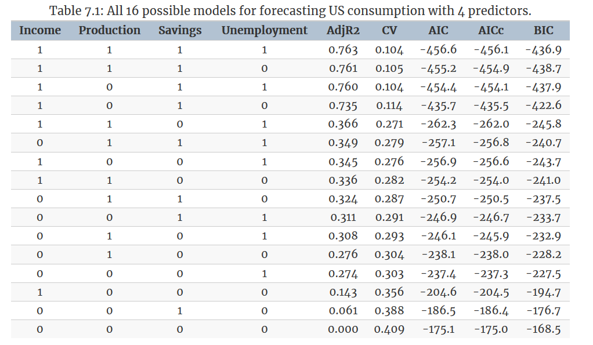
The best model contains all four predictors according to \(\text{AIC}_c\). The results from a backward selection using AIC follow suit:
MASS::stepAIC(us_change_lm, direction = "backward")
#> Start: AIC=-458.58
#> Consumption ~ Income + Production + Savings + Unemployment
#>
#> Df Sum of Sq RSS AIC
#> <none> 18.573 -458.58
#> - Unemployment 1 0.322 18.895 -457.18
#> - Production 1 0.400 18.973 -456.36
#> - Savings 1 31.483 50.056 -264.27
#> - Income 1 32.799 51.371 -259.14
#>
#> Call:
#> lm(formula = Consumption ~ Income + Production + Savings + Unemployment,
#> data = us_change)
#>
#> Coefficients:
#> (Intercept) Income Production Savings Unemployment
#> 0.25311 0.74058 0.04717 -0.05289 -0.17469The best model contains all four predictors. However, a closer look at the results reveals some interesting features. There is clear separation between the models in the first four rows and the ones below. This indicates that Income and Savings are both more important variables than Production and Unemployment. Also, the first three rows have almost identical values of \(\text{CV}\), \(\text{AIC}\) and \(\text{AIC}_c\). So we could possibly drop either the Production variable, or the Unemployment variable, and get similar forecasts. Note that Production and Unemployment are highly (negatively) correlated (\(\hat{r} = -0.768\), see figure 7.1)
7.6 Forecasting with regression
Recall the regression model Equation (7.1)
\[\begin{equation} y_t = \beta_0 + \beta_1x_{1t} + \beta_2x_{2t} + \dots + \beta_kx_{kt} + \varepsilon_t \end{equation}\]
While we can easily get fitted values \({\hat{y}_1, \hat{y}_2, \dots, \hat{y}_T}\), what we are interested in here, however, is forecasting future values of \(y\).
7.6.1 Ex-ante versus ex-post forecasts
When using regression models for time series data, we need to distinguish between the different types of forecasts that can be produced, depending on whether future values of predictor variables are known in advance, or whether we need to forecast predcitor variables first.
Ex-ante forecast is a forecast based solely on information available at the time of the forecast, whereas ex-post forecast is a forecast that uses information beyond the time at which the forecast is made.
For example, ex-ante forecasts for the percentage change in US consumption will first requires forecasts of the predictors. To obtain these we can use one of the simple methods introduced in Section 5.2 (mean, naive, seasonal navie and drift method) or more sophisticated pure time series approaches that follow in Chapters 8 and 10. Alternatively, forecasts from some other source, such as a government agency, may be available and can be used. Ex-ante forecasts are genuine forecasting.
On the other hand, ex-post forecasts are those that are made using later information on the predictors. For example, ex-post forecasts of consumption may use the actual observations of the predictors, once these have been observed. These are not genuine forecasts, but are useful for studying the behaviour of forecasting models.
7.6.2 Example: Australian quarterly beer production
Normally, we cannot use actual future values of the predictor variables when producing ex-ante forecasts because their values will not be known in advance. However, the special predictors introduced in Section 7.4 are all known in advance (a trend variable and 3 seasonal dummy variable), as they are based on calendar variables (e.g., seasonal dummy variables or public holiday indicators) or deterministic functions of time (e.g. time trend). In such cases, there is no difference between ex-ante and ex-post forecasts.
# `beer_fit` uses only trend variabe and seasonal dummy variables. In such cases, there is no difference between ex-ante and ex-post forecasts.
beer_fit %>%
forecast(h = "3 years") %>%
autoplot(recent_production, level = 90) +
labs(x = "Year", y = "megalitres",
title = "Forecasts of beer production using regression")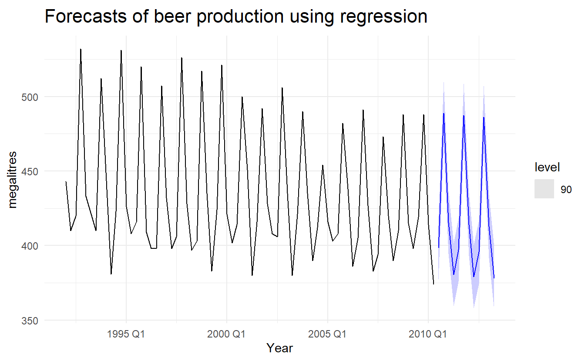
7.6.3 Scenario based forecasting
In this setting, the forecaster assumes possible scenarios for the predictor variables that are of interest. For example, a US policy maker may be interested in comparing the predicted change in consumption when there is a constant growth of \(1\%\) and \(0.5\%\) respectively for income and savings with no change in production and the employment rate, versus a respective decline of \(1\%\) and \(0.5\%\), for each of the four quarters following the end of the sample.
We should note that prediction intervals for scenario based forecasts do not include the uncertainty associated with the future values of the predictor variables. They assume that the values of the predictors are known in advance, (i.e, ex-post forecasts).
# new_data(data, n) creates n rows of time index of each series to
new_data(us_change, 4)
#> # A tsibble: 4 x 1 [1Q]
#> Quarter
#> <qtr>
#> 1 2019 Q3
#> 2 2019 Q4
#> 3 2020 Q1
#> 4 2020 Q2
# define a function producing values based on increase / decrease rate
new_obs <- function(value, length, rate) {
vec <- rep(value, length)
imap_dbl(vec, ~ .x * (1 + rate) ^ .y)
}
up_future <- us_change %>%
slice(n()) %>%
as_tibble() %>%
select(3:6) %>%
pivot_longer(everything()) %>%
select(-name) %>%
mutate(length = 4, rate = c(0.01, 0, 0.005, 0)) %>%
pmap(new_obs) %>%
set_names(c("Income", "Production", "Savings", "Unemployment")) %>%
as_tibble() %>%
bind_cols(new_data(us_change, 4), .)
up_future
#> # A tsibble: 4 x 5 [1Q]
#> Quarter Income Production Savings Unemployment
#> <qtr> <dbl> <dbl> <dbl> <dbl>
#> 1 2019 Q3 0.599 -0.540 -4.29 -0.100
#> 2 2019 Q4 0.605 -0.540 -4.31 -0.100
#> 3 2020 Q1 0.611 -0.540 -4.33 -0.100
#> 4 2020 Q2 0.617 -0.540 -4.35 -0.100
down_future <- us_change %>%
slice(n()) %>%
as_tibble() %>%
select(3:6) %>%
pivot_longer(everything()) %>%
select(-name) %>%
mutate(length = 4, rate = c(-0.01, 0, -0.005, 0)) %>%
pmap(new_obs) %>%
set_names(c("Income", "Production", "Savings", "Unemployment")) %>%
as_tibble() %>%
bind_cols(new_data(us_change, 4), .)
down_future
#> # A tsibble: 4 x 5 [1Q]
#> Quarter Income Production Savings Unemployment
#> <qtr> <dbl> <dbl> <dbl> <dbl>
#> 1 2019 Q3 0.587 -0.540 -4.24 -0.100
#> 2 2019 Q4 0.582 -0.540 -4.22 -0.100
#> 3 2020 Q1 0.576 -0.540 -4.20 -0.100
#> 4 2020 Q2 0.570 -0.540 -4.18 -0.100Then we could produce forecast for each of the two scenarios :
up_future_fc <- forecast(us_change_mfit, new_data = up_future) %>%
mutate(Scenario = "Increase")
down_future_fc <- forecast(us_change_mfit, new_data = down_future) %>%
mutate(Scenario = "Decrease") %>%
as_tibble()
us_change %>%
ggplot(aes(Quarter, Consumption)) +
geom_line() +
geom_line(aes(y = .mean), data = up_future_fc, color = "red") +
geom_line(aes(y = .mean), data = down_future_fc, color = "blue") +
coord_cartesian(xlim = c(ymd("2015-01-01", NA)),
ylim = c(0, 1.2))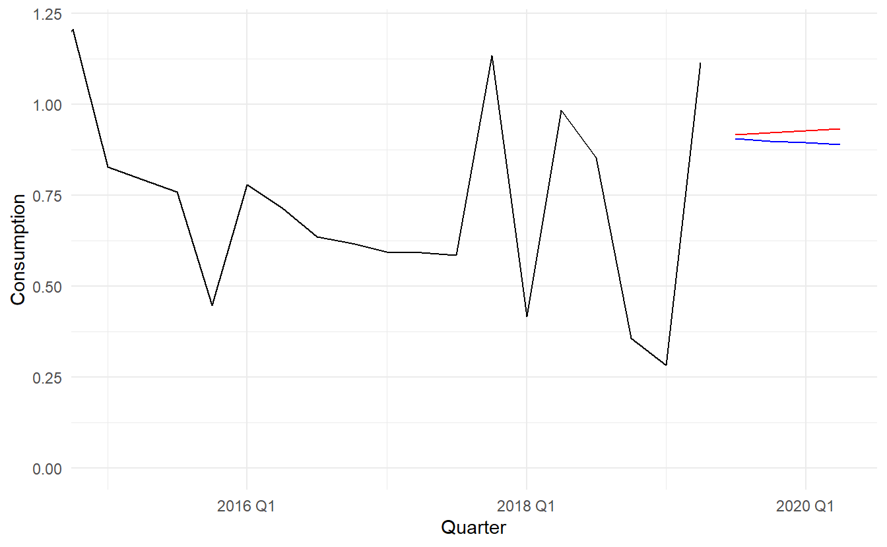
7.6.4 Prediction intervals
The general formulation of how to calculate prediction intervals for multiple regression models is presented in Section 7.7. As this involves some advanced matrix algebra we present here the case for calculating prediction intervals for a simple regression, where a forecast can be generated using the equation
\[ \hat{y} = \hat{\beta}_0 + \hat{\beta}_1 x \]
Assuming that the regression errors are normally distributed, an approximate \(1 - \alpha\) prediction interval associated with this forecast is given by
\[\begin{equation} \tag{7.4} \hat{y} + Z_{\alpha}\hat{\sigma} \sqrt{1 + \frac{1}{T} + \frac{(x - \bar{x})^2}{(T - 1)s_x^2}} \end{equation}\]
where \(\hat{\sigma}\) is the residual standard deviation given by Equation (7.3), and \(s_x\) the standard deviation of predictor \(x\).
Equation (eq:prediction-interval) shows that the prediction interval is wider when \(x\) is far from \(\bar{x}\). That is, we are more certain about our forecasts when considering values of the predictor variable close to its sample mean.
7.6.5 Building a predictive regression model
A major challenge however in regression, is that in order to generate ex-ante forecasts, the model requires future values of each predictor. If scenario based forecasting is of interest then these models are extremely useful. However, if ex-ante forecasting is the main focus, obtaining forecasts of the predictors can be challenging (in many cases generating forecasts for the predictor variables can be more challenging than forecasting directly the forecast variable without using predictors).
An alternative formulation is to use as predictors their lagged values. Assuming that we are interested in generating a \(h\)-step ahead forecast we write
\[ y_{t + h} = \beta_0 + \beta_1 x_{1t} + \beta_2 x_{2t} + \cdots + \beta_k x_{kt} \]
for \(h = 1, 2, \dots\). The predictor set is formed by values of the \(x\)s that are observed h time periods prior to observing y. Therefore when the estimated model is projected into the future, i.e., beyond the end of the sample \(T\), all predictor values are available (unless the step of forecast is larger than lag \(h\)).
Including lagged values of the predictors does not only make the model operational for easily generating forecasts, it also makes it intuitively appealing. For example, the effect of a policy change with the aim of increasing production may not have an instantaneous effect on consumption expenditure. It is most likely that this will happen with a lagging effect. We touched upon this in Section 7.4 when briefly introducing distributed lags as predictors. Several directions for generalising regression models to better incorporate the rich dynamics observed in time series are discussed in Chapter 11.
7.7 Matrix formulation
A linear regression model can be expressed in matrix forms as such:
\[ \boldsymbol{y} = \boldsymbol{X} \boldsymbol{\beta} + \boldsymbol{\varepsilon} \]
where \(\boldsymbol{y} = [y_1, y_2, \dots, y_T]\), \(\boldsymbol{X}\) being the design matrix and \(\boldsymbol{\varepsilon} = [\varepsilon_1, \varepsilon_2, \dots, \varepsilon_T]\) thus have mean \(\boldsymbol{0}\) and variance-covariance matrix \(\sigma^2\boldsymbol{I}\)
Least square estimation uses a projection matrix \(H = \boldsymbol{X(X^TX)^{-1}X^T}\) (also called “hat matrix”) so that \(\boldsymbol{Hy = \hat{y} = X\hat{\beta}}\). We can derive that
\[ \boldsymbol{\beta} = \boldsymbol{(X^TX)^{-1}X^Ty} \]
The residual variance \(\hat{\sigma}\)is estimated using :
\[ \boldsymbol{\hat{\sigma}} = \frac{1}{T-k-1}\boldsymbol{(y - X\hat{\beta})^T(y - X\hat{\beta})} \]
If the diagonal value of \(\boldsymbol{P}\) is denoted by \(h_1, h_2 , \dots, h_T\) then the cross-validation statistic can be computed using :
\[ \text{CV} = \frac{1}{T}\sum{[e_t / (1 - h_t)]^2} \]
For any given \(\boldsymbol{x^*} = [1, x_{1t}, \dots, x_{kt}]\), the fitted value is \(\hat{y} = \boldsymbol{x^*}\boldsymbol{\hat{\beta}}\) and its estimated variance given by:
\[ \hat{\sigma}[1 + \boldsymbol{x^*}(\boldsymbol{X^T X})^{-1}\boldsymbol{(x^*)^T}] \]
A \(1 - \alpha\) prediction interval (assuming normally distributed errors) can be calculated as
\[ \hat{y} + Z_\alpha \hat{\sigma} \sqrt{[1 + \boldsymbol{x^*}(\boldsymbol{X^T X})^{-1}\boldsymbol{(x^*)^T}]} \]
This takes into account the uncertainty due to the error term \(\boldsymbol{\varepsilon}\) and the uncertainty in the coefficient estimates. However, it ignores any errors in \(\boldsymbol{x^*}\). Thus, if the future values of the predictors are uncertain, then the prediction interval calculated using this expression will be too narrow.
7.8 Nonlinear regression
Although the linear relationship assumed so far in this chapter is often adequate, there are many cases in which a nonlinear functional form is more suitable. To keep things simple in this section we assume that we only have one predictor \(x\).
The simplest way of modelling a nonlinear relationship is to transform the forecast variable y and/or the predictor variable x before estimating a regression model. While this provides a non-linear functional form, the model is still linear in the parameters. The most commonly used transformation is the (natural) logarithm (see Section 3.1).
A log-log functional form is specified as \[ \log{y} = \beta_0 + \beta_1 \log{x} + \varepsilon \]
Other useful forms can also be specified. The log-linear form is specified by only transforming the forecast variable and the linear-log form is obtained by transforming the predictor.
Recall that in order to perform a logarithmic transformation to a variable, all of its observed values must be greater than zero. In the case that variable \(x\) contains zeros, we use the transformation \(\log{(x+1)}\); i.e., we add one to the value of the variable and then take logarithms. This has a similar effect to taking logarithms but avoids the problem of zeros. It also has the neat side-effect of zeros on the original scale remaining zeros on the transformed scale.
Also, box-cox transformation as a family of both power transformation and log transformation is given by Equation (3.1)
There are cases for which simply transforming the data will not be adequate and a more general specification may be required. Then the model we use is
\[ y = f(x) + \varepsilon \]
where \(f(x)\) could be of any form. In the specification of nonlinear regression that follows, we allow f to be a more flexible nonlinear function of \(x\), compared to simply a logarithmic or other transformation.
One of the simplest specifications is to make \(f\) piecewise linear. That is, we introduce points where the slope of \(f\) can change. These points are called knots. This can be achieved by letting \(x_{1t} = x\) and introducing variable \(x_{2t}\) such that
\[ x_{2t} = (x - c)_+ = \begin{cases} 0 & x < c\\ (x - c) & x \ge c \end{cases} \]
The notation \((x - c)_+\) means that the value \(x - c\) if it is positive and \(0\) ohterwise, which can be achieved by introducing a dummy variable \(D\) that take 0 if \(x < 0\) and 1 if \(x \ge 0\) and then include term \((x - c)\times D\). This forces the slope to bend at point \(c\). Additional bends can be included in the relationship by adding further variables of the above form.
Piecewise linear relationships constructed in this way are a special case of regression splines. In general, a linear regression spline is obtained using
\[ x_1 = x \;\;\; x_2 = (x - c_1)_+ \;\;\; \cdots \;\;\; x_k = (x - c_{k-1})_+ \]
where \(c_1, \dots, c_k-1\) are knots. Selecting the number of knots (\(k−1\)) and where they should be positioned can be difficult and somewhat arbitrary.
7.8.1 Forecasting with a nonlinear trend
In section 7.4 we introduce the trend variable \(t\). The simplest way of fitting a nonlinear trend is using quadratic or higher order trends obtained by specifying
\[ x_{1t} = t, \;\;\;x_{2t} = t^2, \;\;\;\dots \]
In practice, higher order (\(>3\)) or even quadratic terms are not recommended in forecasting. When they are extrapolated, the resulting forecasts are often unrealistic.
A better approach is to use the piecewise specification introduced above and fit a piecewise linear trend which bends at some point in time. We can think of this as a nonlinear trend constructed of linear pieces. If the trend bends at time \(\tau\), then it can be specified by simply replacing \(x=t\) and \(c=τ\) above such that we include the predictors
\[ \begin{aligned} x_{1t} &= t \\ x_{2t} = (t - \tau)_+ &= \begin{cases} 0 & t < \tau \\ (t - \tau) & t \ge \tau \end{cases} \end{aligned} \] in the model.
7.8.2 Example: Boston marathon winning times
We will fit some trend models to the Boston marathon winning times for men since the event started in 1897.
boston_men <- fpp3::boston_marathon %>%
filter(Event == "Men's open division") %>%
mutate(Minutes = as.numeric(Time) / 60)
boston_lm <- boston_men %>%
model(TSLM(Minutes ~ trend()))
boston_men %>%
ggplot(aes(Year, Minutes)) +
geom_line() +
geom_smooth(method = "lm", se = FALSE) +
geom_vline(xintercept = c(1940, 1980), size = 1.5) +
labs(title = "Fitting a linear line")
boston_lm %>%
augment() %>%
ggplot(aes(Year, .resid)) +
geom_point() +
geom_hline(yintercept = 0, size = 1.5) +
labs(title = "Residual across trend")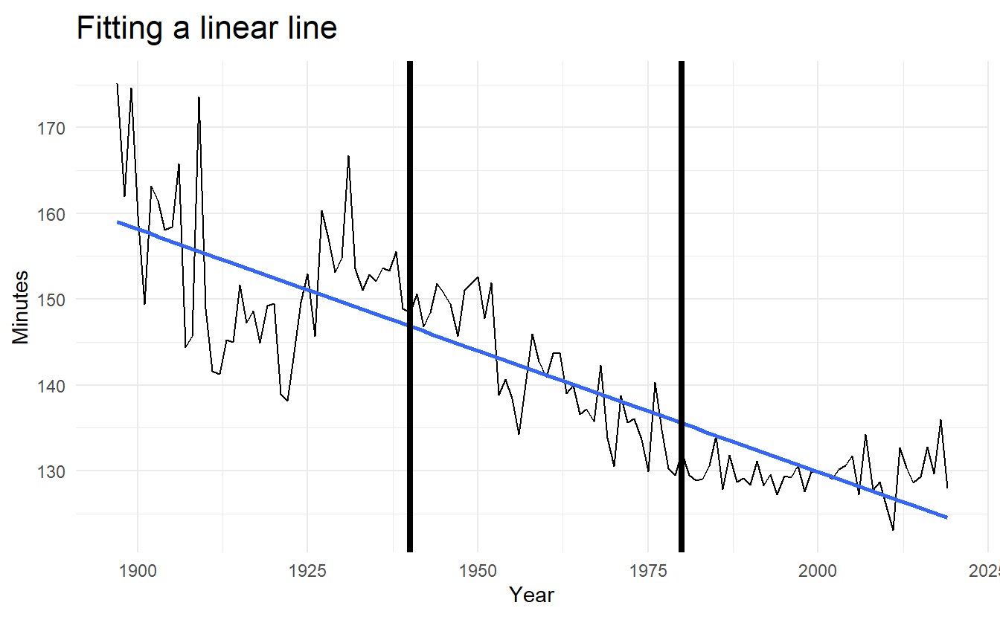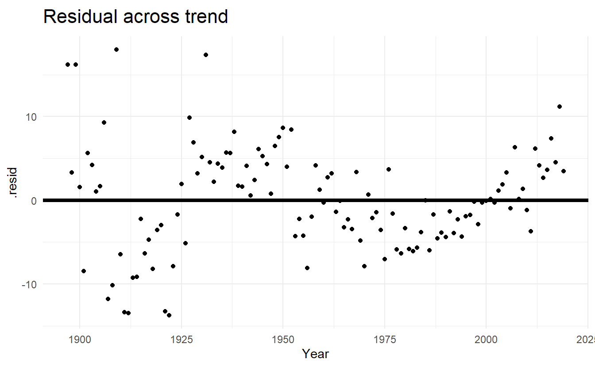
boston_lm %>% glance()
#> # A tibble: 1 x 16
#> Event .model r_squared adj_r_squared sigma2 statistic p_value df log_lik
#> <fct> <chr> <dbl> <dbl> <dbl> <dbl> <dbl> <int> <dbl>
#> 1 Men'~ TSLM(~ 0.728 0.726 38.2 324. 4.82e-36 2 -398.
#> # ... with 7 more variables: AIC <dbl>, AICc <dbl>, BIC <dbl>, CV <dbl>,
#> # deviance <dbl>, df.residual <int>, rank <int>There seems to be a (quadratic) pattern in our residual plot, and our simple linear model isn’t fitting very well.
Alternatively, fitting an exponential trend (equivalent to a log-linear regression) to the data can be achieved by transforming the \(y\) variable so that the model to be fitted is,
\[ \log{y}_t = \beta_0 + \beta_1t + \varepsilon_t \]
The plot of winning times reveals three different periods. There is a lot of volatility in the winning times up to about 1940, with the winning times decreasing overall but with significant increases during the 1920s. After 1940 there is a near-linear decrease in times, followed by a flattening out after the 1980s, with the suggestion of an upturn towards the end of the sample. To account for these changes, we specify the years 1940 and 1980 as knots. We should warn here that subjective identification of knots can lead to over-fitting, which can be detrimental to the forecast performance of a model, and should be performed with caution.
A piecewise regression (bends at certain time \(t\)) is specified using the knots argument in trend():
boston_piece_fit <- boston_men %>%
model(
linear = TSLM(Minutes ~ trend()),
exponential = TSLM(log(Minutes) ~ trend()),
piecewise = TSLM(Minutes ~ trend(knots = c(1940, 1980)))
)
boston_piece_fc <- boston_piece_fit %>% forecast(h = 10)
boston_piece_fc %>%
autoplot(boston_men, level = NULL) +
labs(title = "Boston Marathon",
x = "Year",
y = "Winning times in minutes",
color = "Model")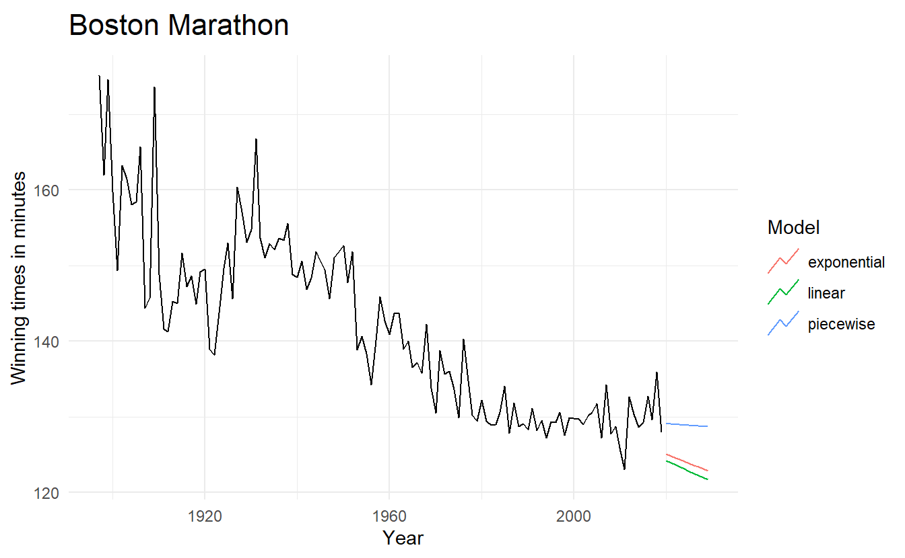